השראה לשנה שלי
ויז׳ן בורד 2026
מקומות, תחושות ורגעים שאני רוצה לפנות להם מקום.
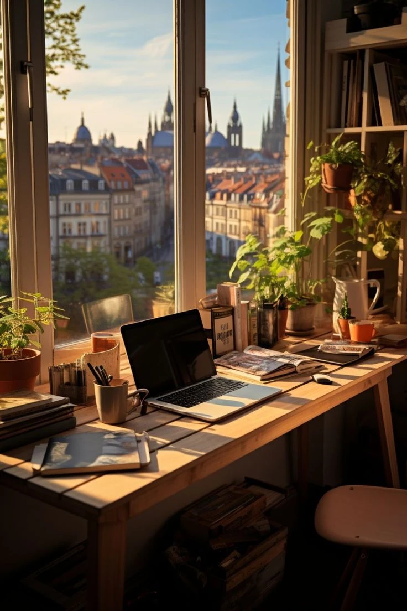

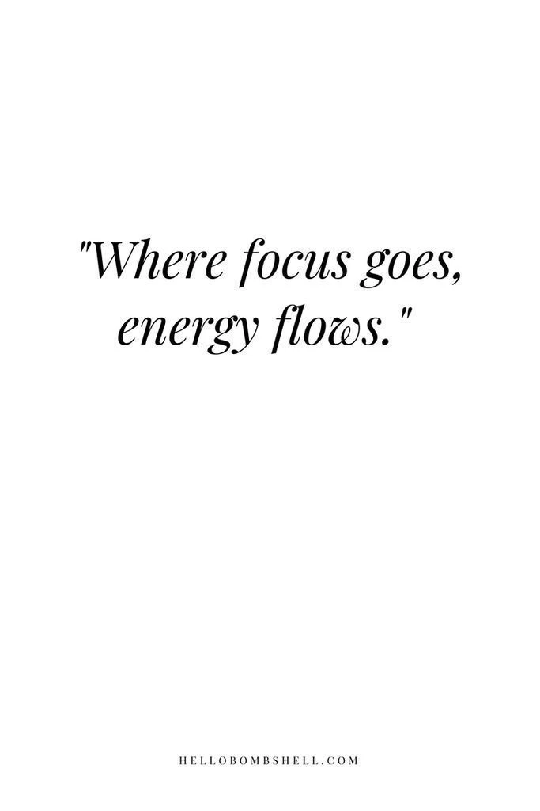

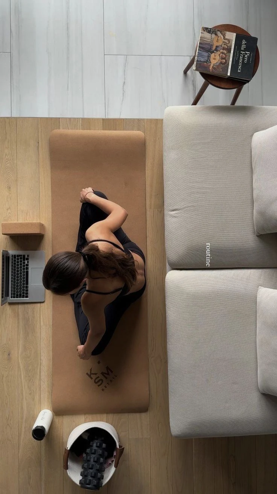
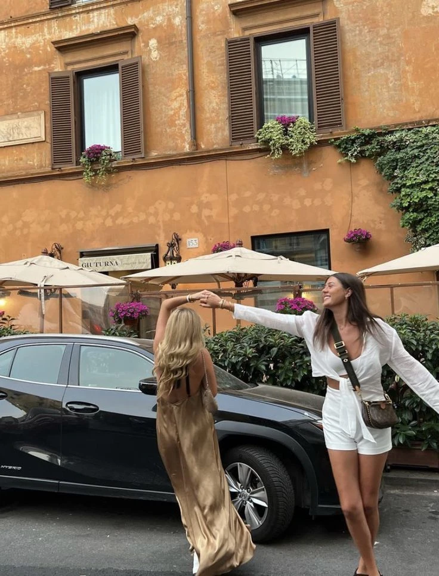
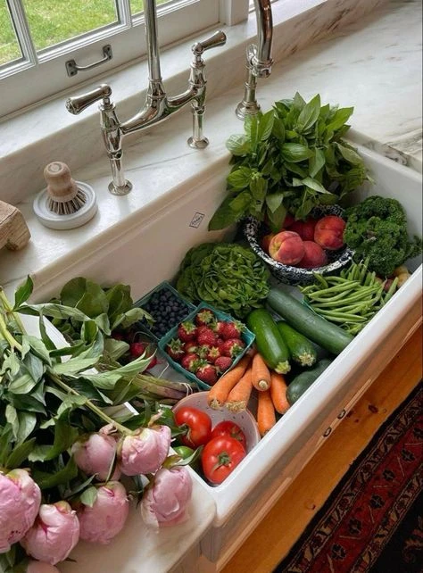

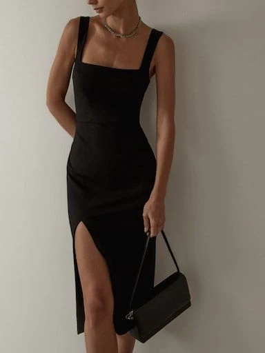
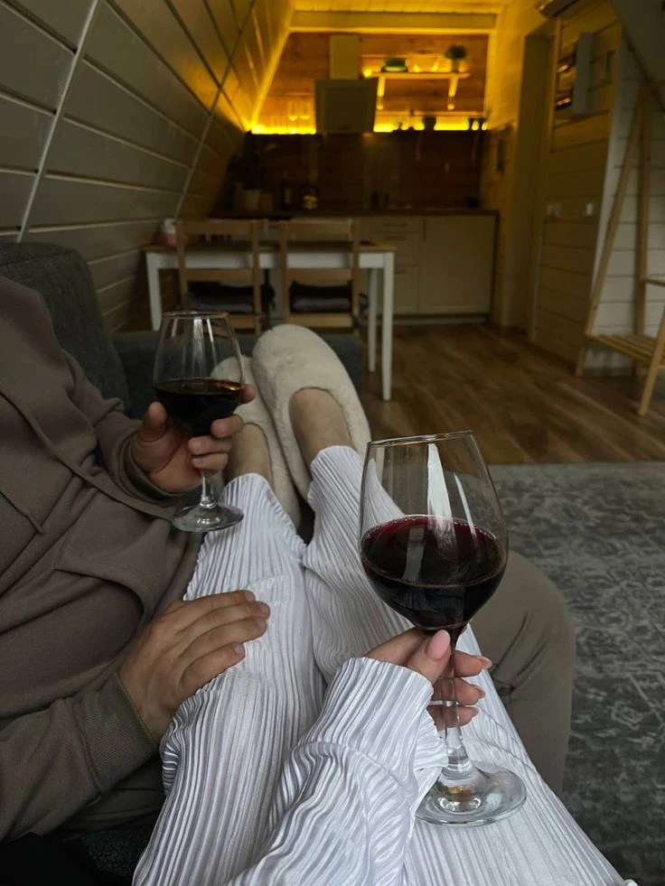
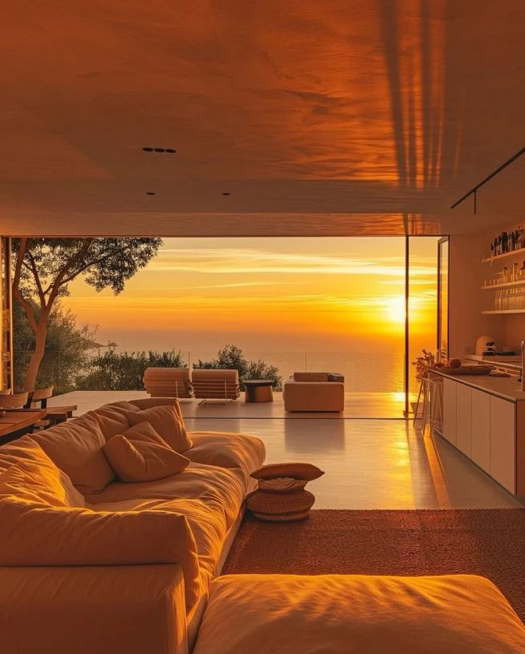
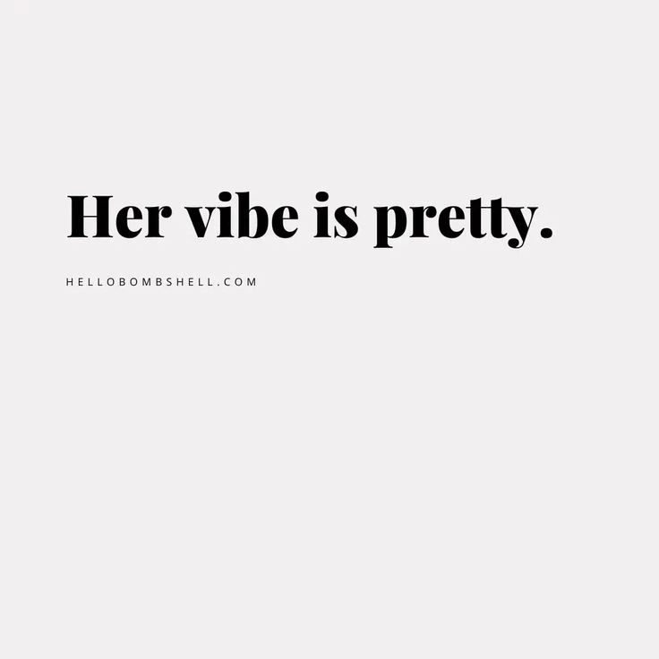
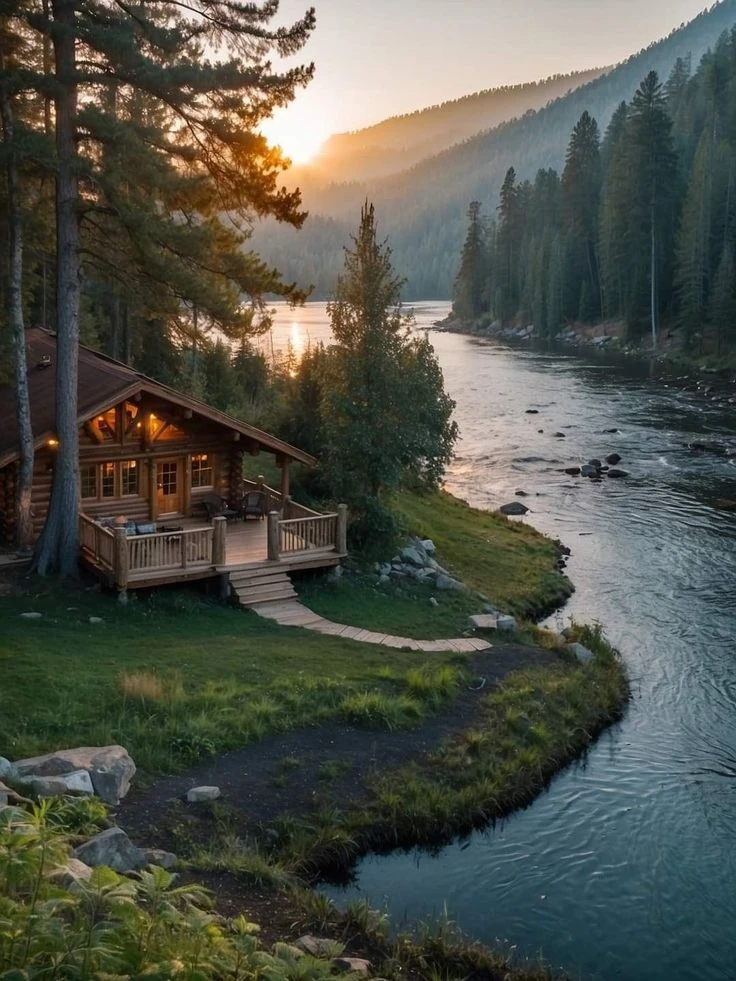
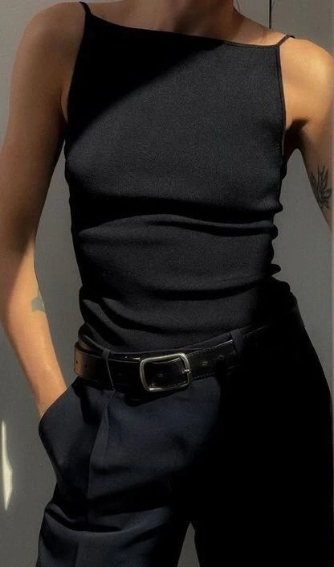
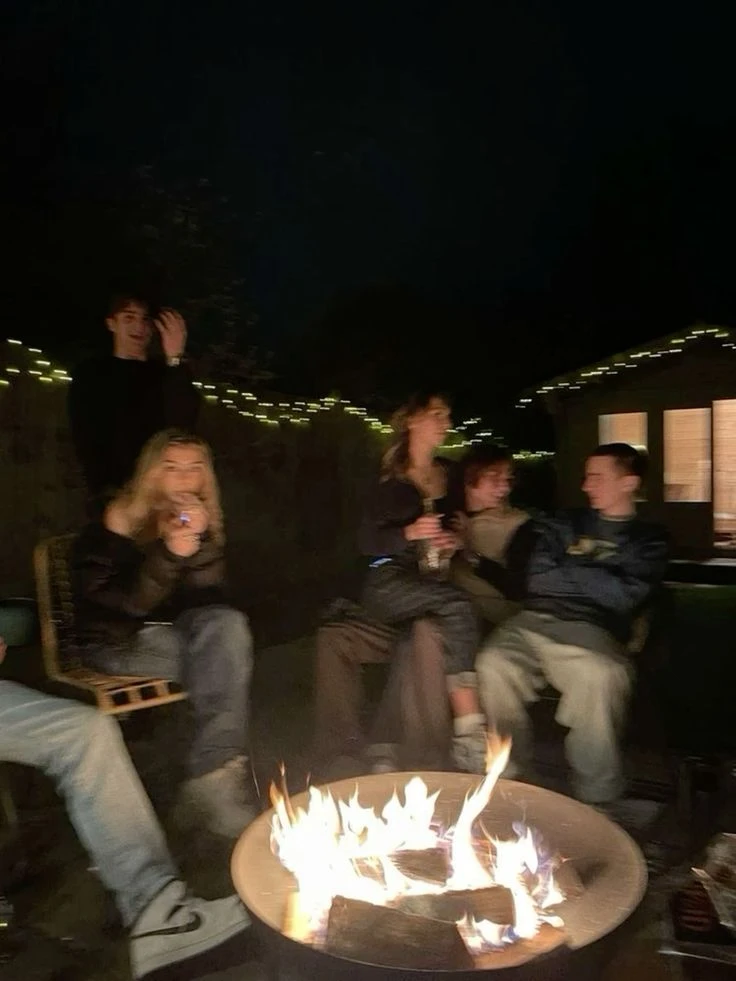
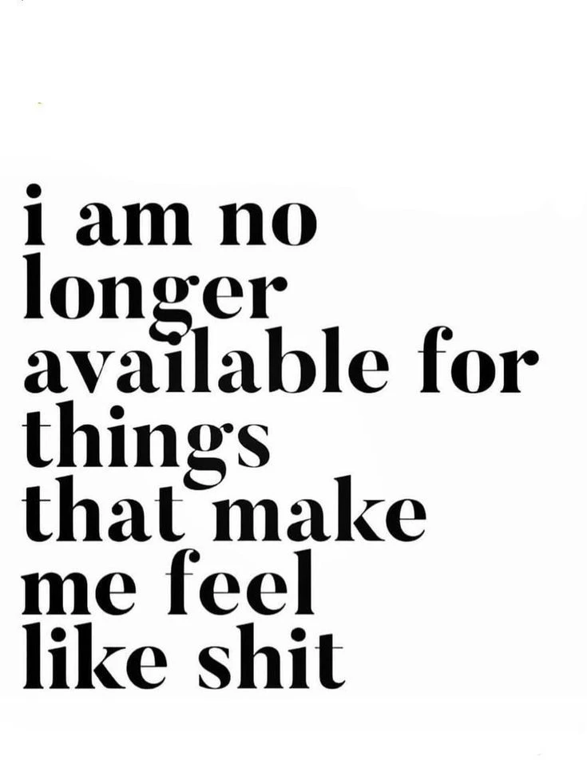
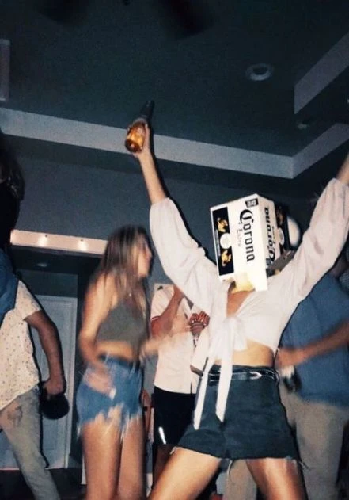
מההשראה אל הלוח שלך
איך מכינים ויז׳ן בורד?
מחפשים השראה
נכנסים לפינטרסט ומחפשים דברים שרוצים בשנה הקרובה, בנושאים כמו עבודה, זוגיות, תחביבים, תזונה, ספורט וטיולים.
בוחרים לפי התחושה
עוברים על התמונות עד שמוצאים תמונה שמעבירה את התחושה שרוצים להרגיש. שומרים את התמונות שבחרתם בתיקייה אחת.
מצמצמים למה שבאמת מדבר אליכם
כדאי לבחור עד 20 תמונות, כדי שהלוח לא יהיה עמוס מדי. אפשר לשלב ביניהן גם משפטים שמתחברים למה שאתם רוצים.
יוצרים קולאז׳
מסדרים את התמונות בקאנבה או בתוכנת עריכה אחרת שנוחה לכם. את התמונה שנוצרה אפשר לשים כרקע או כמסך נעילה בטלפון, כדי לפגוש אותה ביום יום.
ואפשר גם על נייר
אפשר לפתח או להדפיס את התמונות ולהכין ויז׳ן בורד פיזי, ולתלות אותו במקום שרואים ואוהבים.